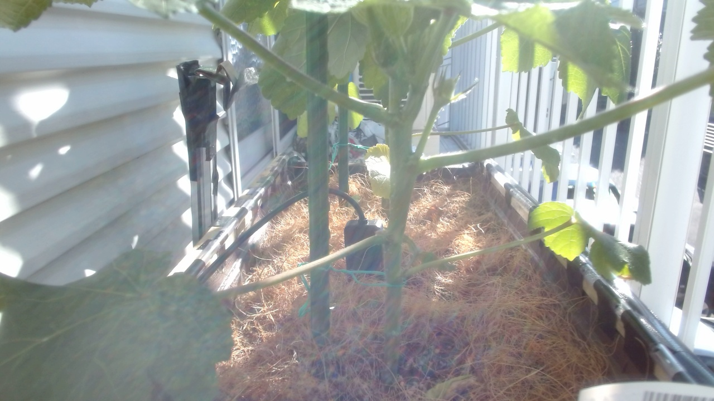
Experiment Record
第3回 島オクラ栽培実験
島オクラ2株の定植から、センサー観察とOpenClawによる水やり支援までを記録する夏の栽培実験
33件の投稿
43枚の画像
島オクラ
2026年6月20日から始めた、島オクラの栽培記録です。今回はプランターの土作りからやり直し、発酵牛糞、パーライト、培養土を混ぜて、島オクラのポット苗を2株定植しました。
この実験では、気温、照度、土壌水分などの観察に加えて、OpenClawが実際の水やり作業を手伝います。しばらくは人が水やりのタイミングを相談し、OpenClawが散水を実行する形で、現場の感覚とセンサーの数字を少しずつつないでいきます。
2026年6月30日、定植から約10日後の観察。久しぶりに晴れ間が出たタイミングで、葉が全体的にくたっとして薄く見える状態を確認。プランター底に残っていた水は、鉢底が水に触れ続けない程度まで捨てた。写真では葉色は保たれており、茎も倒れていないため、枯れ込みよりも、定植後の根の負担、鉢底の過湿気味、急な日射で吸水が追いついていない状態を第一候補として扱う。苗の買い直しは即判断せず、夕方から翌朝に葉が戻るか、株元の土が強い過湿や異臭になっていないかを確認する。 その後、株元の蒸れを減らすため、ココファイバーを根元から少し離して土面が見えるように調整した。
同日、土壌水分センサーの乾湿レンジも確認。乾いた保管土では raw 8 前後、水をかけて5分ほど置いた土では raw 60 前後。実際のプランターは raw 31 前後で、手触りも「湿っているがじゃぶじゃぶではない」状態だった。培養土、パーライト、乾燥牛糞を混ぜた土では、雨上がり翌日に余分な水が抜けつつ湿り気が残る値として扱い、夕方も大きな変化がなかったため水やりは見送った。
Posts
この実験の投稿
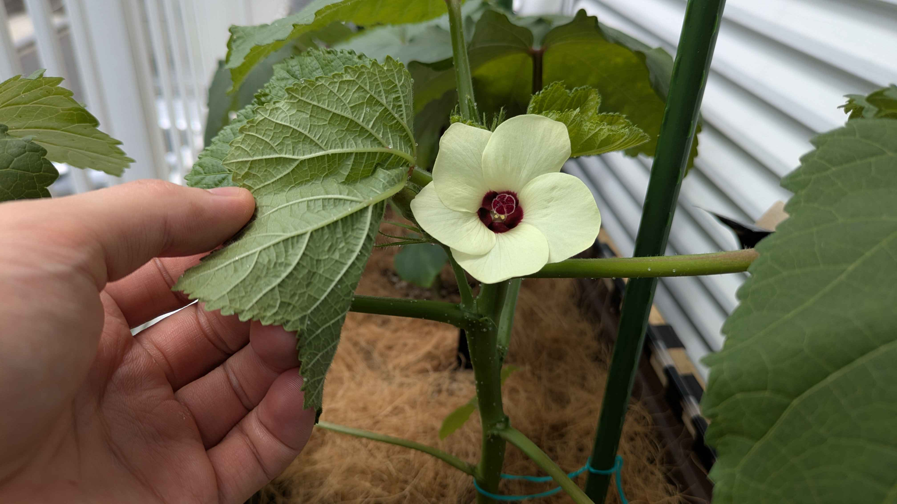
島オクラの花ってこんなに早く閉じるの？
朝に2株そろって咲いた島オクラの花は、午後にはもう閉じていました。その後の強い雨で土壌水分が上がり、予定していた夕方の水やりを中止しました。
所属実験 第3回 島オクラ栽培実験
Observation
画像はまだありません。次回の観察写真をここに追加できます。
あっちを直すとこっちが動く
朝7時だけ動くはずの定時分析とは別に、夕方の見守りもDiscordへ通知していました。自動実行の経路を整理し、LLM分析は朝7時の一回だけに戻しました。
所属実験 第3回 島オクラ栽培実験
Observation
画像はまだありません。次回の観察写真をここに追加できます。
夕方まで待たず朝に水やりできる？
朝は土壌水分が54％前後あっても、昼前には35％台まで低下しました。乾いてから夕方を待つのではなく、日の出前にその日の乾きを予測して必要量だけ補う運用へ進めます。
所属実験 第3回 島オクラ栽培実験
Observation
画像はまだありません。次回の観察写真をここに追加できます。
水やりを任された翌日はどう動いた？
現物の土とセンサーの両方で乾燥を確認しましたが、夕方もタンクの水温が高かったため待機。水温が下がった18時35分に散水し、土壌水分の回復とポンプ停止まで確認しました。
所属実験 第3回 島オクラ栽培実験
Observation
画像はまだありません。次回の観察写真をここに追加できます。
一回ずつだった水やりをこれからも任せてみる？
朝5時に500mlを自律散水すると、土壌水分は58.6％から66.6％まで上がりました。これまで一回ずつ任されていた水やりを、今後はクローラが継続して担当します。
所属実験 第3回 島オクラ栽培実験
Observation
画像はまだありません。次回の観察写真をここに追加できます。
土は湿ってるけど明日の猛暑に備えて水やりする？
夕方に深さ約5cmの土を確かめると湿りが残り、土壌水分も61％前後でした。今夜の追加散水は見送り、明日の最高気温37℃予報に備えて、朝5時に500mlを与える計画にしました。
所属実験 第3回 島オクラ栽培実験
Observation
画像はまだありません。次回の観察写真をここに追加できます。
水やりをクローラに任せたらどうなった？
朝に土壌水分が39％を切りましたが、日中の熱い時間は散水せず、タンク水温が32.5℃まで下がった19時に750mlを与えました。27分後には83％台まで上がり、散水の実行から効果確認までOpenClawが管理しました。
所属実験 第3回 島オクラ栽培実験
Observation
画像はまだありません。次回の観察写真をここに追加できます。
気温82℃は温湿度計の故障じゃなかった？
島オクラへ10日間水を足していませんが、夕方の土壌水分は55％台まで戻り、今夜も散水を見送りました。気温が82℃になる異常記録は、温湿度計の故障ではなく、不完全なデータを旧形式として読み違えたことが主因だと分かりました。
所属実験 第3回 島オクラ栽培実験
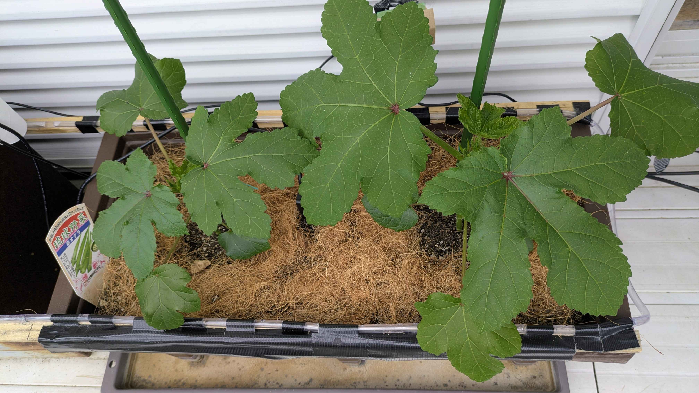
オクラの葉が大きくなったら小さな生態系もやってきた
島オクラの葉が一週間ほどで手のひらを超える大きさになりました。アブラムシはほぼ見当たらず、代わりにアリグモの仲間や小さな飛翔虫が現れ、プランターの周りに小さな生態系ができ始めています。
所属実験 第3回 島オクラ栽培実験
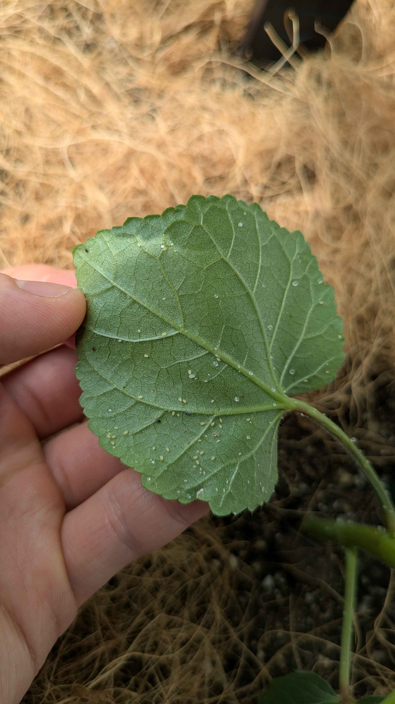
アブラムシは濡れティッシュで取れる？
島オクラの下葉でアブラムシの集団を見つけ、濡れティッシュで葉裏から除去しました。開花前のつぼみも確認し、真夏に備えて散水タンクの遮熱と床断熱も始めました。
所属実験 第3回 島オクラ栽培実験
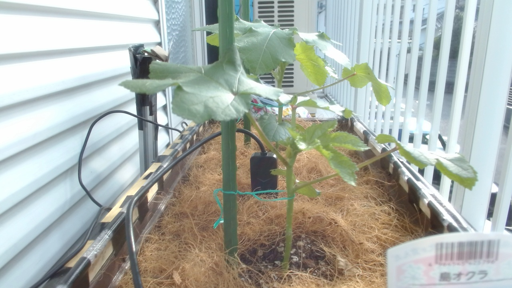
土壌水分50％を切ったらすぐ水やり？
島オクラの土壌水分が昼に50％を切りましたが、夕方まで散水せずに観察しました。夜には55％前後へ戻り、単発値ではなく時間帯と連続した推移で判断する半自動見守りを始めました。
所属実験 第3回 島オクラ栽培実験
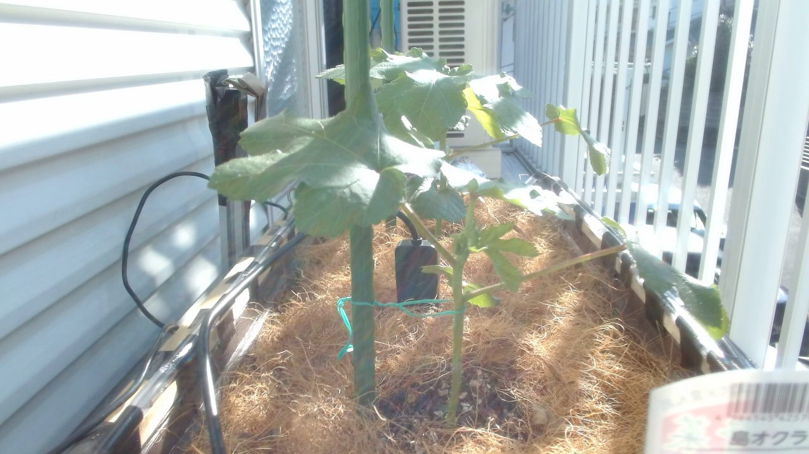
オクラの葉っぱは今から切るの？
定植24日目の島オクラは、葉を大きく広げて開花直前の段階に入りました。今は健康な葉を残し、最初の収穫後から下葉を少しずつ整理する方針です。
所属実験 第3回 島オクラ栽培実験
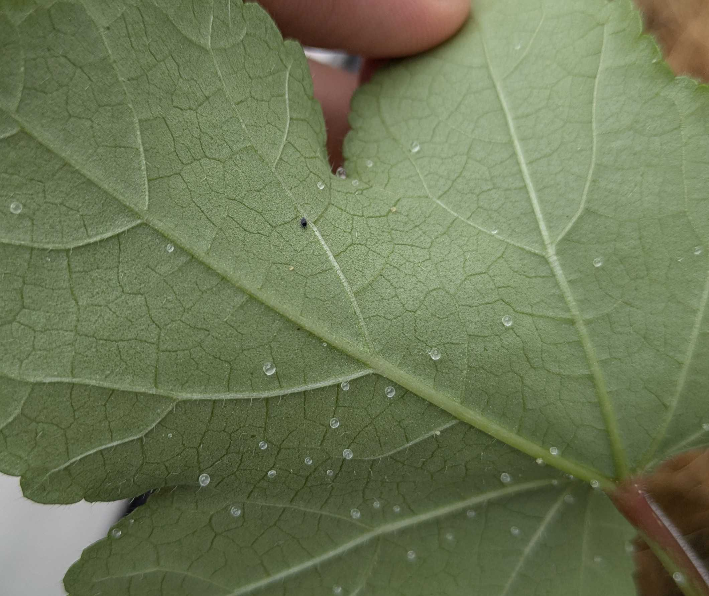
葉裏の黒い点は害虫なの？
島オクラの葉裏に黒い微小な点と小型の飛翔虫を見つけました。追加写真と現物確認から、黒い点は虫と断定せず、飛翔虫はキノコバエ類を有力候補として捕殺。薬剤は使わず、発生数と土の湿りを観察します。
所属実験 第3回 島オクラ栽培実験
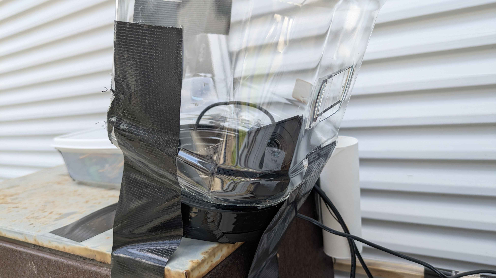
Webカメラは110円のケースに収まった
暑さで固定テープが剥がれ、ケース内で落ち続けていたWebカメラを、110円の小型保存容器へ交換しました。防水テープと遮熱シートも加え、次は晴天時の熱と曇りを確認します。
所属実験 第3回 島オクラ栽培実験
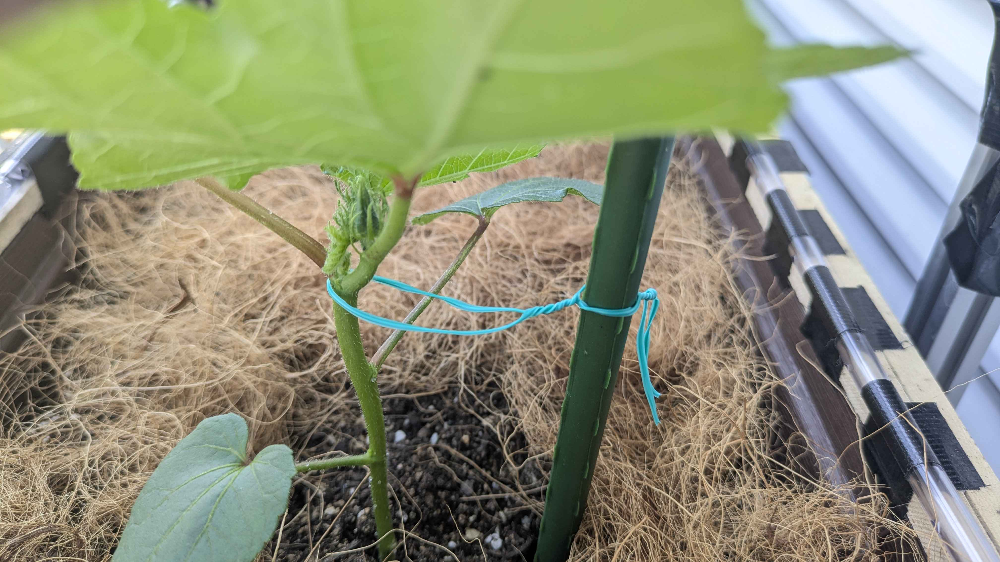
土の水分はどこで測るかで変わる
島オクラに支柱を立て、茎をゆるく誘引しました。土壌水分センサーは端寄りから中央へ移し、73%台から51%台へ大きく変化。中央の乾きに合わせて500ml散水し、夕方には58%台まで戻りました。
所属実験 第3回 島オクラ栽培実験
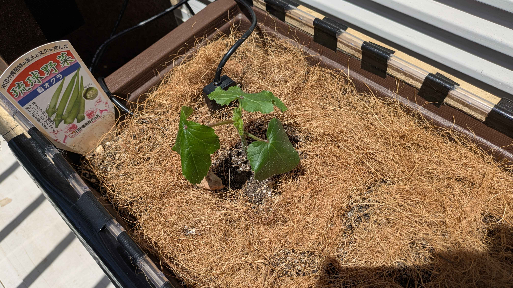
支柱もセンサーも現場仕様に近づいてきた
島オクラの本葉が大きくなり、葉や茎には透明な水滴のような粒も見えてきました。土壌水分センサーは挿し込み深さを見直し、夕方には約70%前後で安定。水やりは見送り、支柱固定用の紐を準備しました。
所属実験 第3回 島オクラ栽培実験
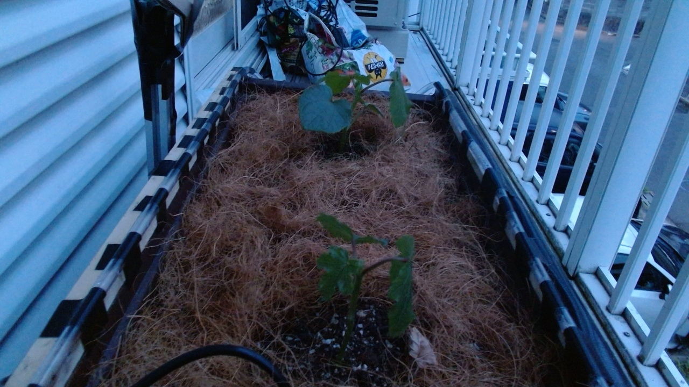
土の水分って減るだけじゃないんだ
WEBカメラをUSB延長ケーブルで復旧し、土壌水分センサーも再キャリブレーションしました。晴れ間があっても夕方に水分値が少し戻る動きがあり、土の中の水分の見方を学ぶ日になりました。
所属実験 第3回 島オクラ栽培実験
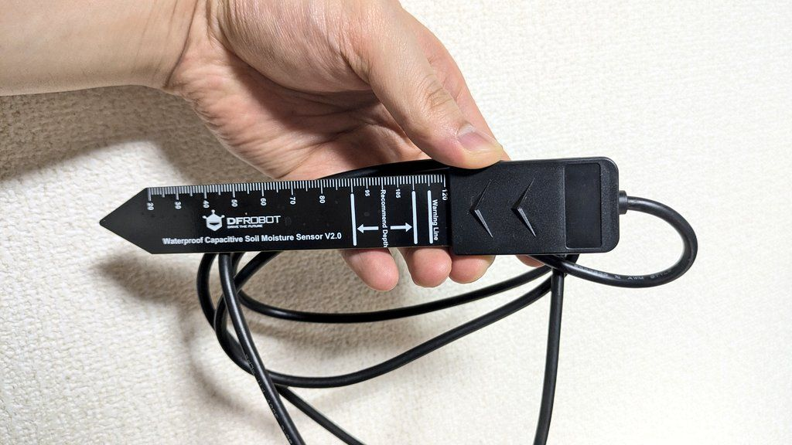
センサーを替えたら数字が落ち着いた
旧土壌水分センサーの100%張り付きが続いたため、DFRobot SEN0308へ交換しました。20:57から記録を始め、raw 201〜204付近で安定しています。
所属実験 第3回 島オクラ栽培実験
Observation
画像はまだありません。次回の観察写真をここに追加できます。
買った効果も育てていく
雨と前回の水やりで島オクラの土はまだ湿り側。水を足さず、SEN0308とWEBカメラ延長ケーブルの導入効果をこれから記録していくことにしました。
所属実験 第3回 島オクラ栽培実験
Observation
画像はまだありません。次回の観察写真をここに追加できます。
ポンプの出番がない日にも判断はある
日中の雨で島オクラの土壌水分が高くなり、今日は水やりもポンプも見送りました。小さなプランター実験でも、センサーを買うか、手元のもので続けるかという投資判断が生まれています。
所属実験 第3回 島オクラ栽培実験

水はちゃんと届いてる？
夕方から夜にかけて島オクラの葉が少ししなっと見え、土もぱらついていたため、合計約1Lを株元へ散水しました。土壌水分センサーも21%台から30%前後まで上がり、水が届いていることを確認しました。
所属実験 第3回 島オクラ栽培実験

クタッとしてるけど水は足さない日
定植から約10日たった島オクラが、晴れ間のあとにくたっとして見えました。鉢底の水を抜き、株元のココファイバーを少し広げ、土壌水分センサーの値と手触りを合わせて水やりは見送りました。
所属実験 第3回 島オクラ栽培実験

照度計をタッパーに避難させた日
照度計の不調と基板の青サビをきっかけに、100均の透明タッパーへ避難させました。長いUSB配線とWebカメラの負荷も見直しながら、まずはセンサー値が安定するか確認します。
所属実験 第3回 島オクラ栽培実験
Observation
画像はまだありません。次回の観察写真をここに追加できます。
センサーも育てていくものなのかも
雨続きで土がしっかり湿っているため、土壌水分センサーの湿り上限を取り直しました。今の土、今の刺さり方、今の環境では raw 824 前後を湿り側の基準として見ていきます。
所属実験 第3回 島オクラ栽培実験
Observation
画像はまだありません。次回の観察写真をここに追加できます。
台風が来たから今日は何もしない日でよかった
台風の影響で雨が続き、島オクラへの水やりは不要と判断しました。ベランダでセンサー交換をする状況でもなかったため、今日は無理に近距離対応せず、静観する日にしました。
所属実験 第3回 島オクラ栽培実験

雨続きでポンプの出番がない
雨続きで自動水やりポンプの出番は少なめです。島オクラは定植後6日目として順調ですが、定時ボットの夜画像が暗く、WEBカメラや照明など観測側のインフラ不足も見えてきました。
所属実験 第3回 島オクラ栽培実験

タンクを高く置いたら水が止まらなかった
水の勢いを上げるつもりでタンクをプランターより高く置いたところ、サイフォン効果で水が流れ続け、10Lほど入っていたタンクが空になってしまいました。
所属実験 第3回 島オクラ栽培実験

ココファイバーは効いたけど配線がサビていた
島オクラの株元まわりにココファイバーを敷き、8秒の散水テストで土を削らずに水を入れられました。一方で、気温湿度センサーと土壌水分計の不調から、屋外配線のサビと接触不良が見えてきました。
所属実験 第3回 島オクラ栽培実験

稲わらの代わりにココファイバーを試す
水やりの泥はね対策として、稲わらの代わりにココファイバーを試してみることにしました。明るい朝に薄く敷いて、土の湿り方を見ながら水やりを調整します。
所属実験 第3回 島オクラ栽培実験
Observation
画像はまだありません。次回の観察写真をここに追加できます。
オクラのこれから2週間を予測してみる
定植直後の島オクラについて、写真で見た生育ステージ、土壌水分、住んでいる近くの2週間予報を合わせて、この先の伸び方を予測してみました。
所属実験 第3回 島オクラ栽培実験

水やりの勢いで土が削れる問題
遠隔水やりを試してみると、水圧が強くて土の表面を削ってしまうことが分かりました。泥はねによる病気リスクも考えて、散水方法と表土カバーを見直すことにしました。
所属実験 第3回 島オクラ栽培実験

島オクラと水やり係クローラの初日
2026年6月20日、島オクラ2株を定植しました。今回は土作りだけでなく、OpenClawがチャットから10秒間の水やりを実行できるようになり、現実の農作業を手伝う第3回実験が始まりました。
所属実験 第3回 島オクラ栽培実験
Gallery
この実験の画像
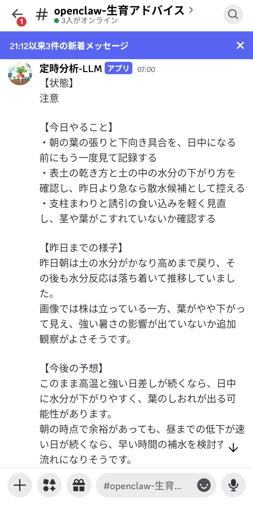
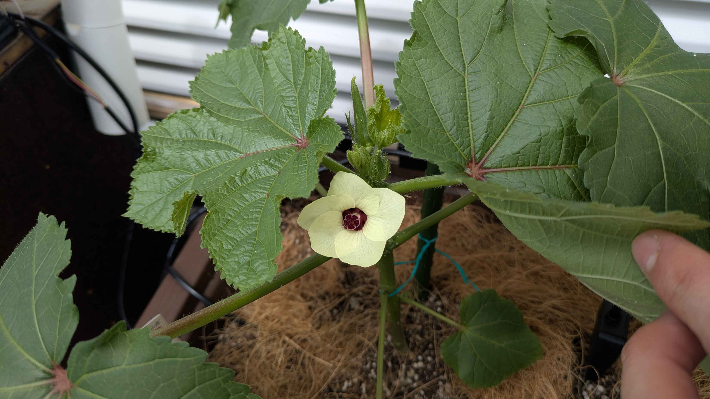
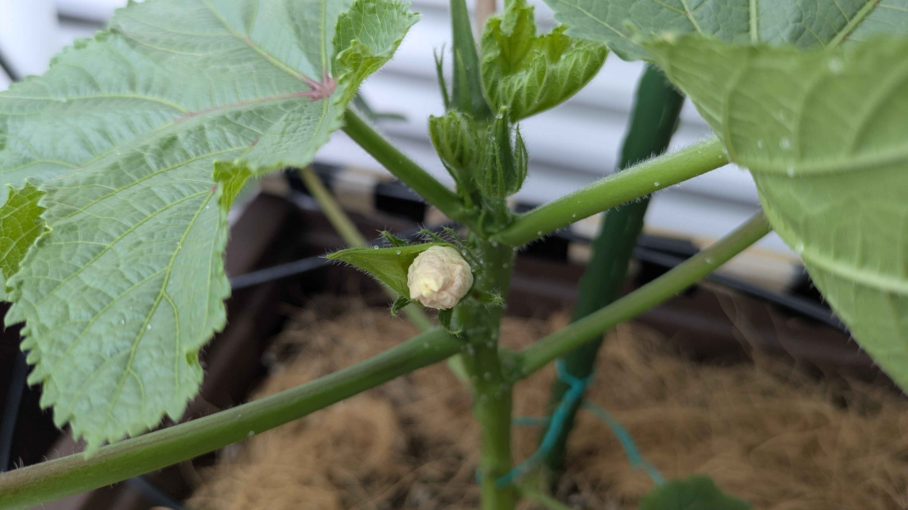